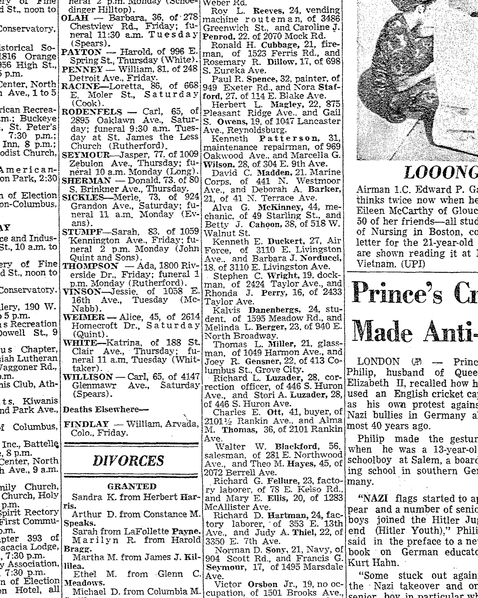

Melinda Lee Berger b. 1947
Partner of Peter's uncle Kalvis Danenbergs.
Living. As for every living relative on this site, the birth date is given by year only, and no current address is shown.
Melinda Lee Berger was born in 1947 in Ohio, United States2.
Family
- Partner
- Kalvis Danenbergs b. 1946
- Children
- Justin Danenbergs b. 1975 documented
Life events
| Event | Date | Place and details |
|---|---|---|
| Born | 1947 | Ohio, United States2 |
| Education | 1965 | Blanchester, Ohio, United States Blanchester High School, Blanchester, Ohio, class of 1965. Her own alumni profile gives maiden name Berger, occupation "Teacher", married "Yes", favourite school memory "GAA Sports" (the Girls' Athletic Association), and under About Me: "Taught school for 40 years". Leaving school in 1965 fits a…5 |
| Work | bet 1969 and 2009 | Ohio, United States Schoolteacher — "Taught school for 40 years", in her own words on her alumni profile. Neither the schools nor the exact years are given; forty years from about 1969 would end about 2009. Worth asking her which schools, and in which towns, because that is forty years of dated places.6 |
| Lived | 3 Jan 1971 | Columbus, Ohio, United States3 |
| Lived | bet 28 Sep 1973 and 2026 | Midland, Clinton County, Ohio, United States4 |
| Work | bet 2017 and 2026 | Ohio, United States Local historian and contributing columnist to the Wilmington News Journal (wnewsj.com, 1547 Rombach Avenue, Wilmington, Ohio), writing about the history of Jefferson Township, Midland, Westboro, Blanchester and Clinton County. Identified columns: "Westboro ceremony has storied history" (1 June…7 |
| Note | 13 Jun 2026 | Ohio, United States Secretary of the Jefferson Township School Alumni & Friends association. At its 103rd annual meeting, held on Saturday 13 June 2026 in the Westboro Community Church fellowship hall, she sat with President Ed Pagett, Vice-President Laura Summers and Treasurer Darlene Kassner, and she and Kassner…8 |
Records

Sources
- MyHeritage family tree 'Dzimta' of Peter's third cousin (his family site), member GEDCOM export of 26 Oct 2026, I500166 (person-6500166), GEDCOM lines 10258–10272.
NAME Melinda Lee /Berger/
His confirmed Smart Match with another tree: Voroņinu dzimtas lapa, https://www.myheritage.lv/person-1002068_OYYV6GENXOY2D7YW6XGE4NH6BKEVORA_OYYV6GENXOY2D7YW6XGE4NH6BKEVORA/melinda-danenbergs-born-berger (added by confirming the match).
- Melinda Lee Danenbergs, Age 79, Midland, OH.
Overview of Melinda Lee Danenbergs — Lives in: Midland, Ohio. DOB: 1947
Born 1947. She had no birth date at all in the tree. The place is not given; she went to high school in Blanchester, Clinton County, Ohio, so Clinton County or its neighbours is the likely birthplace.
- Marriage Licenses, The Columbus Dispatch (Columbus, Ohio), 3 January 1971, p. 79.
Kalvis Danenbergs, 24, student. of [address omitted], and Melinda L. Berger, 23, of [address omitted].
Translation: Kalvis Danenbergs, 24, student, of [address omitted], and Melinda L. Berger, 23, of [address omitted].
Residing at [address omitted], Columbus, Ohio, age 23 (born c. 1947), at the time of her Franklin County marriage license application with Kalvis Danenbergs, 24, student, of [address omitted], Columbus.
- Melinda Lee Danenbergs — Voting Profile.
Melinda Lee Danenbergs (age 79) is currently listed at [address omitted], Midland, 45148 Ohio, is not affiliated to any political party. Melinda is registered to vote since September 28, 1973 in Clinton County.
[address omitted], Midland, Ohio 45148; registered to vote in Clinton County since 28 September 1973, voter status Active, no party affiliation. Signing a 2010 newspaper guest book she gave the same place: "Melinda & Kalvis Danenbergs, Midland, Ohio".
- Melinda Danenbergs (Melinda Berger), Blanchester High School Class of 1965.
First Name Melinda · Last Name Danenbergs · Maiden Name Berger · Graduation Year Class of 1965 · Gender Female · State/Province OH · Country United States · Occupation Teacher · Married Yes · Favorite School Memory GAA Sports · About Me Taught school for 40 years
Blanchester High School, Blanchester, Ohio, class of 1965. Her own alumni profile gives maiden name Berger, occupation "Teacher", married "Yes", favourite school memory "GAA Sports" (the Girls' Athletic Association), and under About Me: "Taught school for 40 years". Leaving school in 1965 fits a July 1947 birth exactly.
- Melinda Danenbergs — About Me.
Occupation Teacher … About Me Taught school for 40 years
Schoolteacher — "Taught school for 40 years", in her own words on her alumni profile. Neither the schools nor the exact years are given; forty years from about 1969 would end about 2009. Worth asking her which schools, and in which towns, because that is forty years of dated places.
- Beginning to end of passenger train service in Wilmington, Midland and beyond.
Melinda Danenbergs' research led to this column — inspired by her interest in railroads and local history, and by the News Journal's/Clinton County History Center's January 13 Throwback Thursday photo "Bridge to Train's Past." … By Melinda Danenbergs, Contributing columnist
Local historian and contributing columnist to the Wilmington News Journal (wnewsj.com, 1547 Rombach Avenue, Wilmington, Ohio), writing about the history of Jefferson Township, Midland, Westboro, Blanchester and Clinton County. Identified columns: "Westboro ceremony has storied history" (1 June 2017, "Submitted by Melinda Danenbergs"); "A bridge to Westboro's past" (19 February 2021, "By Melinda Danenbergs, For The News Journal"); "Beginning to end of passenger train service in Wilmington, Midland and beyond" (27 January 2022, "By Melinda Danenbergs, Contributing columnist" — "Melinda Danenbergs' research led to this column — inspired by her interest in railroads and local history"). She also writes history columns into the Facebook group "Blanchester, Ohio History and Genealogy" as "Mel Danenbergs", where another page calls her "Local historian Melinda Danenbergs".
- Jefferson Township School Alumni & Friends gather for 103rd annual meeting.
Association President Ed Pagett presided over the gathering, assisted by Vice President Laura Summers, Treasurer Darlene Kassner, and Secretary Melinda Danenbergs. … The evening's program was presented by Kassner and Danenbergs, who shared historical information and projected vintage photographs highlighting Jefferson Township, Midland City, and Westboro.
Secretary of the Jefferson Township School Alumni & Friends association. At its 103rd annual meeting, held on Saturday 13 June 2026 in the Westboro Community Church fellowship hall, she sat with President Ed Pagett, Vice-President Laura Summers and Treasurer Darlene Kassner, and she and Kassner gave the evening's programme: "Kassner and Danenbergs… shared historical information and projected vintage photographs highlighting Jefferson Township, Midland City, and Westboro." The meeting opened with a recording of the historic Jefferson school bell rung twelve times.